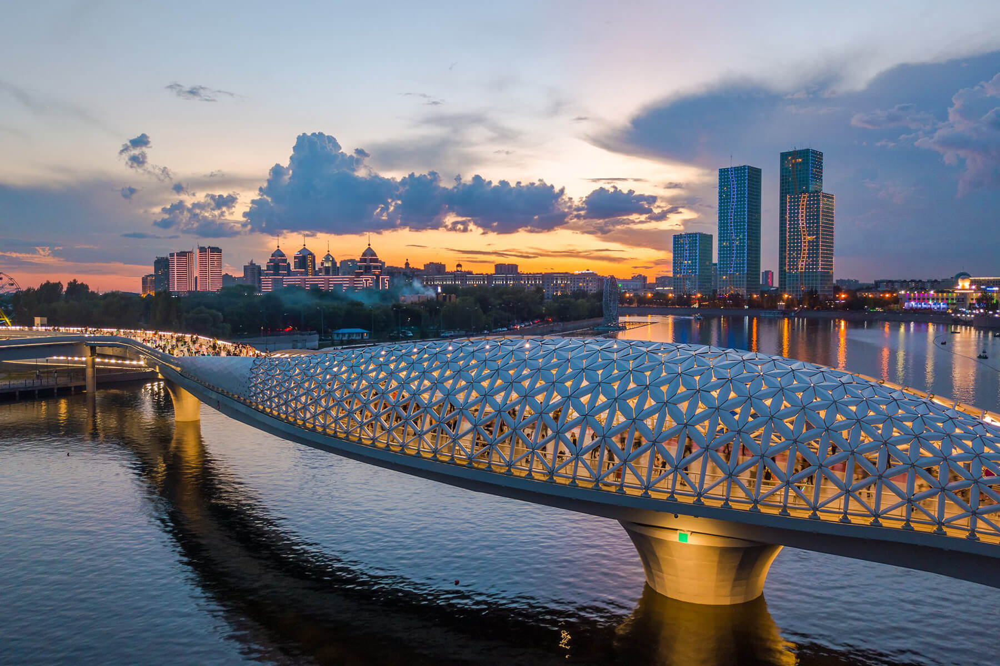
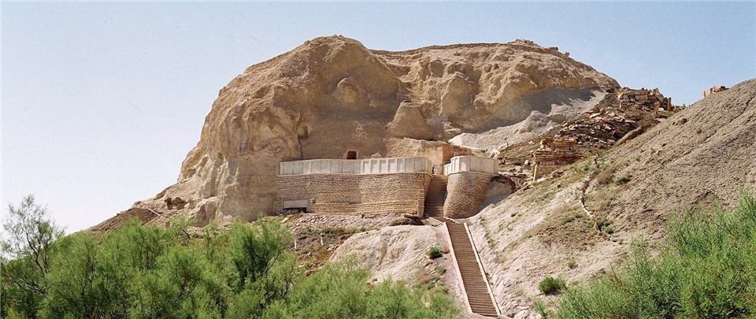

| Place | Rating on Google Maps | Location |
| Atyrau Bridge | 4,7 / 5 (1694) | located in Nur-Sultan |
| Kok Tobe TV Tower | 4,7 / 5 (740) | located at the south-east edge of the Almaty |
| Beket-Ata underground mosque | 4,9 / 5 (113) | 285km east of Aktau |
The Atyrau Bridge is one of the latest pieces of iconic architecture in contemporary Nur-Sultan. Designed by local young architects it’s become the most picturesque sightseeing in a historical part of the city.
Its design form and facade refer to the symbol of the Atyrau region a unique endemic – Caspian Sturgeon. Designed in a parametric manner, two and half thousand individual façade pieces of its shell create a shelter of the public space and give a sense of a place. It's truly one of the tourist destinations where people love to get together and bring their guests to visit.
The Kok Tobe TV Tower was built to perform clear technical tasks. But the elegant, unique architectural design and the height of the construction made it a symbol of Almaty.
The newest and most innovative construction methods of the time were used during its construction. Can you imagine that in order to ensure the stability of the 372-meter tower on clay soil, a concrete foundation weighing 45 thousand tons had to be built! Despite the fact that the total weight of the tower is 50 thousand tons.
Thanks to the pendulum damper system, the TV tower cannot be affected by any strong gusts of wind and has a high seismic stability up to 10 points on the Richter scale.
The Kok Tobe TV Tower is the second highest building in Kazakhstan, and the 14th highest TV tower in the world!
Beket-Ata Underground Mosque is associated with the name of Beket Myrzagululy, an Islamic mystic who is revered as a saint by Sufi Muslims. Every year hundreds of pilgrims come here to commemorate him. They all notice the miraculous energy prevailing within the walls of the mosque.
The mosque consists of four rooms carved into the rock. Beket Ata is buried in one of them. The tomb of his sister Akkuash is in the next room, which only women are allowed to enter. When you are ready to leave, remember not to turn your back to the graves, so as not to offend the spirits of the people buried here.
Beket Ata Underground Mosque is a place resplendent with grace, where everybody can feel peace and harmony. It is worth visiting at least once.